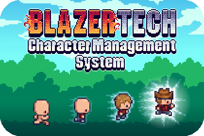
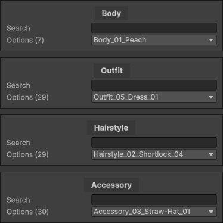

Quick Start Guide

Welcome to the BlazerTech Character Management System!
This guide will help you create your first characters and display them in your scene — whether you're using Unified or Layered characters.
Note
It’s recommended to read through the Basic Concepts page first to understand how character types, templates, and usage all fit together.
🥠Video Guides
Prefer video tutorials? Here are some setup guides to get you started:
- Layered Character Type Setup Guide — Create a Layered Character Type, build a template, and render your character.
- Unified Character Type Setup Guide — Set up a Unified Character Type, make a template, and render it in-game.
Note
These videos will be periodically updated as the Character Management System evolves.
Finalized versions will be published closer to the full release.
🧱 Step 1 — Create a Character Type
If you only plan to use the included characters, you can skip ahead to Creating a Character Template.
To create a new Character Type:
Right-click in the Project window →
Create > BlazerTech > Character Management System →
Select Layered Character Type or Unified Character Type.
You can name this asset anything you like.
Tip
Not sure which one to use? See Character Type Variants for a comparison of Unified vs. Layered characters.
⚙️ Character Type Core Fields
Each Character Type — whether Unified or Layered — includes three key fields:
Character Type ID
A unique identifier for this Character Type.
This must be unique across all types to avoid conflicts.
Base Spritesheet
The master spritesheet that defines the character’s frame size and layout.
All other spritesheets for this type must match its exact dimensions.
- Set Sprite Mode to Multiple (to slice frames individually).
- Use the bare character (no outfit, hair, or accessories) as your base.
📘 Read More → Base Spritesheet
Character Controller (Optional)
Optionally assign an Animator Controller for characters of this type.
Animations should use sprites from the Base Spritesheet so they display correctly when rendered through the Character Shader.
📘 Read More → Character Shader
📘 Read More → Character Controller
Important
Unified Character Types are complete at this stage. No further setup is required.
🧩 Layered Character Setup
Layered Characters are composed of multiple sprite layers (for example: Body, Outfit, Hair, Accessory).
Each layer must be defined as its own Character Layer Asset.
To create a new layer:
Right-click the Project window →
Create > BlazerTech > Character Management System > Layered Character Type > Character Layer
Each Character Layer represents a single visual layer and contains a list of possible sprite options (called Layer Options).
📘 Read More → Character Layers
🧬 Step 2 — Create a Character Template
Once your Character Type is ready, the next step is to create a Character Template — a reusable blueprint that defines how the character will look when instantiated.
Right-click the Project window →
Create > BlazerTech > Character Management System > Character Templates →
Select Layered Character Template or Unified Character Template.
🧠Unified Character Template
A Unified Character Template requires:
- A reference to its Unified Character Type.
- A Character Name.
- A reference to the character’s Spritesheet.
Spritesheet Requirements:
- Must match the Base Spritesheet’s size and frame layout.
- Sprite Mode:
Single - Filter Mode:
Point (No Filter) - (Optional) Compression:
None(recommended for pixel art)
Once set up, move to Character Usage to see it in action.
📘 Read Also → Unified Character Template
🧕 Layered Character Template
A Layered Character Template also references a Layered Character Type and defines a name for the character.
When assigned, the Layers List automatically appears — matching the layers from the Character Type.
Each entry allows you to select a Layer Option (sprite variant) from a dropdown list.

Tip
If your layers list ever appears incorrect, click Recreate List at the bottom to refresh it.
(Note: this will reset any selected options.)
📘 Read Also → Layered Character Template
🮠Step 3 — Character Usage
The simplest way to display a character in your scene is by using a Character Renderer component.
| Character Type | Use This Component |
|---|---|
| Unified | Unified Character Template Renderer |
| Layered | Layered Character Template Renderer |
🔩 Character Renderer Fields
References
| Field | Description |
|---|---|
| Renderer | Typically a Sprite Renderer. The Character Shader will apply to this. |
| Set Animator Controller | Toggles whether to use the Character Controller from the Character Type. |
| Animator | The Animator component to assign the controller to. |
Loading Settings
| Field | Description |
|---|---|
| Loading Mode | Asynchronous — loads in the background without freezing gameplay.Synchronous — loads immediately but may cause a short pause. |
| Load Character On Start | Automatically loads the character in Start(). If disabled, call GetAndShowCharacter() manually. |
Template Reference
At the bottom of the component, assign your Character Template (Unified or Layered).
This defines which character is created at runtime.
🧾 Final Step — Test It!
Press Play in the Unity Editor.
If Load Character On Start is enabled, your character should appear in the scene automatically.
🉠Congratulations!
You’ve successfully created and displayed your first BlazerTech character.
Tip
Once you’re comfortable with templates, try experimenting with the Character Creator Menu for full runtime customization and randomization features.